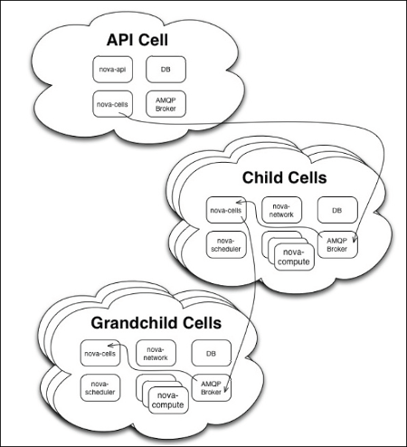
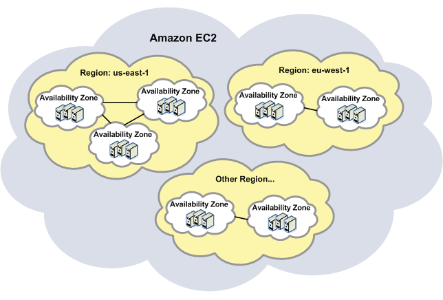
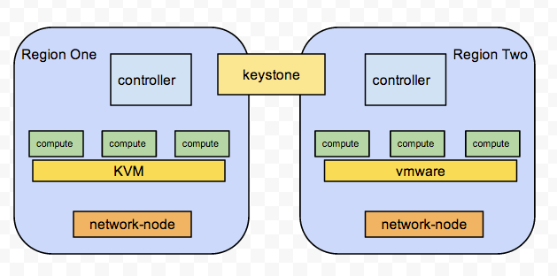

当我们在一个数据中心部署生产环境的OpenStack，我们会考虑一个至关重要的问题，就是如何组织大量的计算节点。OpenStack提供了两种方式，nova-cells 与 multi-regions，这两种方式都可以用户构建大量的计算节点，区别在于前者所有计算节点使用相同的controller服务和network node；而后者则是把这些独立开来，纯粹两套OpenStack，只是他们共用一个keystone服务。
cells 官方的说法是:It is intended to support very large deployment 。有很多网友研究过，下面放一张多人转载的图:
每个cell都会有独立的数据库和消息队列，这样可以大量减轻主消息队列的服务压力，我们可以像树状结构一样大量进行扩展，每个cell部署一定数量的计算节点，这样就可以支撑整体数据中心大量计算节点的部署需求。
但是这一切都是看似美好，如果你尝试部署nova-cells，你会在log中收到这样一条提示:
WARNING nova.cells.manager [-] The cells feature of Nova is considered experimental by the OpenStack project
because it receives much less testing than the rest of Nova. This may change in the future,
but current deployers should be aware that the use of it in production right now may be risky.
没错，nova-cells还没有完全开发好，架构还不够稳定，官方并不推荐在生产环境部署使用。曾经和OpenStack全球顶级服务提供商Mirantis交流过，他们也并不推荐使用nova-cells，而且他们在实践中都是使用multi-regions方式，Mirantis的部署工具Fuel也没有集成nova-cells。
nove-cells的一些参考资料:
regions 我们更情愿理解为跨数据中心的部署方案，比如AWS的服务，你可以选择北美数据中心或是欧洲数据中心，生产你的虚拟机，这种方式更像是regions。每个region下面有Availability zone，就像下面这样:
可是OpenStack的regions与AWS略有不同，它需要共用一个keystone服务，这样keystone的服务需要跨数据中心访问，这是不现实的，那么多的token授权请求都是无法等待的。
正因如此，我们不得不在数据中心内部划分region，比如你可以划分一个高性能region，一个低性能region，每个region都是独立的一套OpenStack，可以有不同的网络方案，不同的虚拟化技术。如下图:
每个Region可以支持4K个租户，在租户内用 VLAN作为Type Driver，而不是用VXLAN；为了支持多个Region在同一个物理网络上承载，我们可以使用两种要物理网络:
多个Region的支持又支持实现远大于4K个租户的问题，这一部署的障碍现在看来是租户不能在Region之间迁移，如果结合实际情况，这可能是一个优点，譬如我们对租户可以进行区分，不同属性或不同需求的租户在不同的 Region内，实现了区分服务。以现阶段Openstack的实践，一个Region的最大部署服务器不超过1000台，通常是在200台之内。
除此之外，国内厂商华为开发了一种新的OpenStack部署方式，Cascading OpenStack更倾向于多个数据中心部署OpenStack，可以参考这个学习一下
https://wiki.openstack.org/wiki/OpenStack_cascading_solution 。